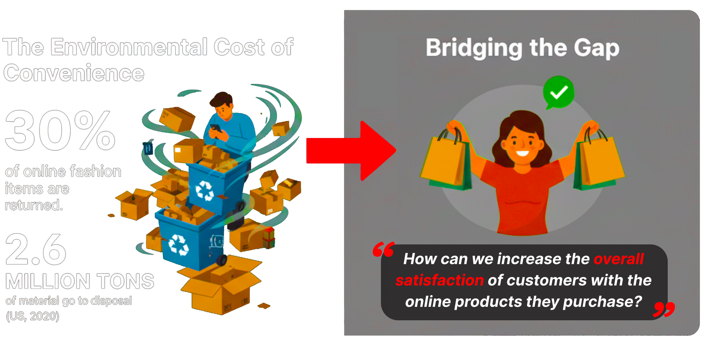

01 — Context
Online fashion has a waste problem.
About 30% of online fashion purchases are returned, generating millions of tons of waste a year — largely because shoppers can’t tell how something will actually look or fit. The gap between the online and physical experience is the root cause.
